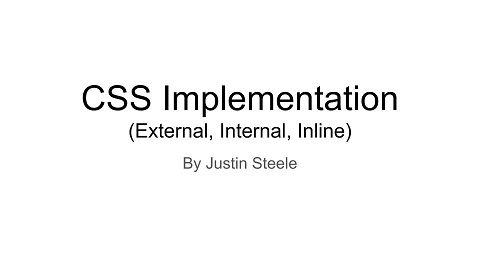
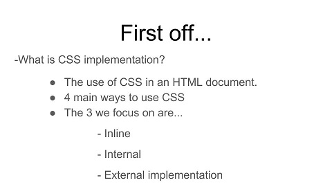
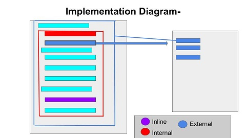
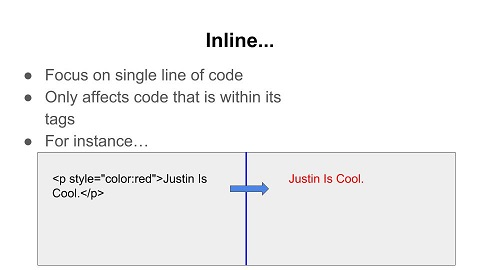
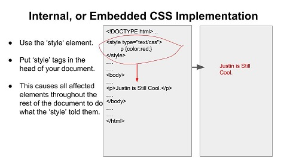
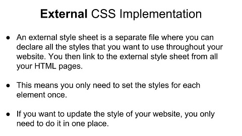
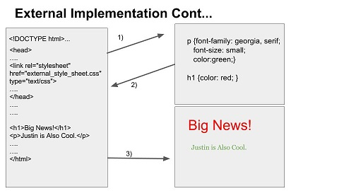
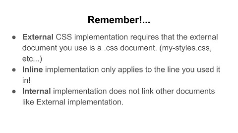

CSS Implementation (External, Internal, Inline)
Introduction Slide:
Slide 2 softly defines CSS implementation and specifies the three main types of implementation.:
Slide 3 is an important step in visualizing the process that occurs in each of the three types of Implementation.The diagram is a simple and strong way for one to understand the general areas where CSS is written, where it goes and how it is used.:
The fourth slide begins with a description and a simple example of inline CSS implementation. It is easy to see that inline implementation is written in a single line of code and will therefore apply to that specific code, and none other.:
Slide five focuses on Internal CSS implementation. The example points out that internal implementation occurs when the CSS is written in the head of an HTML document and can apply to large portions of the document at once.:
Slide six is very important as it begins to define External CSS implementation, External implementation is similar to internal, in the fact that it can apply to large portions of the HTML document, but it differs in that it is all written in a seperate document, and must be linked so the browser can find it and use what it says to style the HTML.:
Slide seven is simply and clean example of what this External CSS implementation may look like and what it will do. The arrows serve to help one see each step the browser takes and where it will go to read and execute the implementation.:
This last slide serves to recap some important points and more importantly moves to clarify differences that may trip up the rushed programmer.:
The presentation then concludes and we are now enlightened as to the implementation of CSS